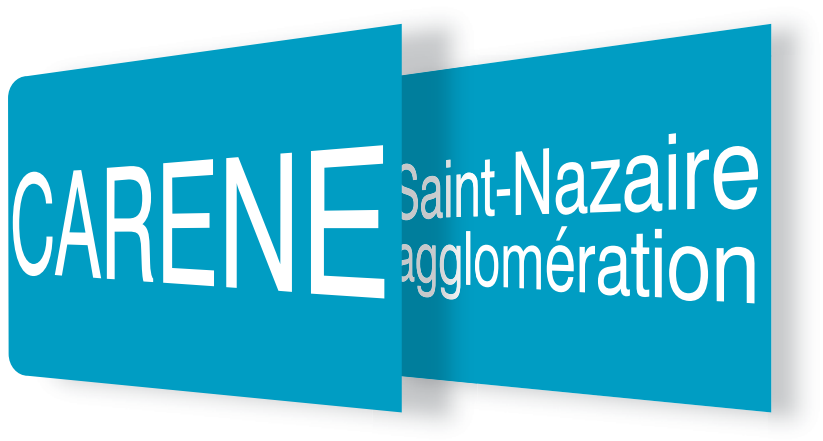
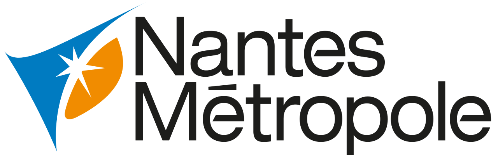
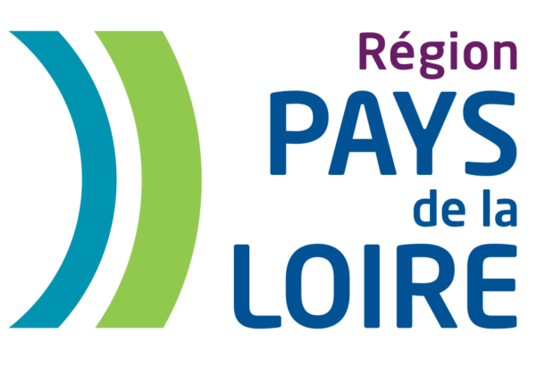

Camp d’entraînement pour primo-entrepreneurs
Saison 3 - Mai 2019 - #Gratuit #Nantes #SaintNazaire
Good Morning
MAIA MATER, C’EST POUR:
- les DOERS (designers, développeurs, ingénieurs et scientifiques).
- les ETUDIANT.E / JEUNE DIPLOMÉ.E/ Ex SALARIÉ.E .
- les ACHARNÉS, avec une problématique qui les obsède.
COURT
Le camp se répartit sur 3 années, mais ponctuellement. Pas de baby-sitting à l’année. On vous donne les bases et entre deux sessions, vous êtes dans la jungle !
INTENSE
Les périodes de camps sont consacrés à la construction d’un projet pérenne. C’est pourquoi on vous impose de vivre sur place (perso, pro, dodo). Rien de mieux pour se donner à fond.
RADICAL
Nous vous transmettons ce que nous savons pertinents : Il n’existe pas de recette miracle, chaque succès est personnel mais néanmoins il existe de bonnes habitudes.
La formule est simple : on fournit l'hébergement et la nourriture et vous êtes entourés par des badass entrepreneurs . C'EST GRATUIT & C'EST GARANTI SANS BULLSHIT
TOTAL SOUTIEN DE:
  NOTRE BIBLIOTHEQUE ANTIQUE sur MEDIUM
Maia Mater: Labor omnia vincit improbus 💪

Guillaume Odier
Co-founder @ Captain Data | Tech lover & entrepreneur
Nov 1, 2017 - 7 min read
Un programme d’accompagnement pour les guerriers à la rue.Je faisais l’intro de Maia Mater dans mon dernier article “Startup Jungle: la foire aux accompagnements”. Aujourd’hui je vais plus loin: immersion de quatre mois dans le camp de vac…d’entrepreneuriat!
-
Maia Mater : quand l’entrepreneuriat se mène à la marge
-
Quatre mois dans la caserne aux startups
-

Fiitli chez Maia Mater 🤺
-

Abradebarras X Maia Mater
-
Maia Mater: Labor omnia vincit improbus 💪
-

Startup Game : où les petits malins ne font plus recette et l’on appelle une déesse romaine à la rescousse dans la guerre économique mondiale


PAIN FOR PLEASURE
Année 1 : SUDARE
[De mai à septembre]
C’est l’occasion d’éveiller chez vous le mindset de l’entrepreneur, de vous transmettre les pratiques que l’on juge bonnes. Tout se passe dans l’ancienne caserne militaire Mellinet à Nantes. Il y aura de la sueur et des larmes, mais aussi du fun et de gros succès !
Année 2 : DECIDERE
[Juillet]
Les survivants sont invités à une retraite à Saint-Nazaire, mais pas pour se la couler douce. Vous êtes là pour faire une rétrospective de l’année et décider : Accélérer, pivoter, ou mourir.
Année 3 : MULTIPLICARE
[Ponctuellement]
Qui de mieux placé pour parler de l’expérience Maia Mater que ceux qui y ont survécu ? On a donc besoin de vous pour des interventions auprès des rookies.